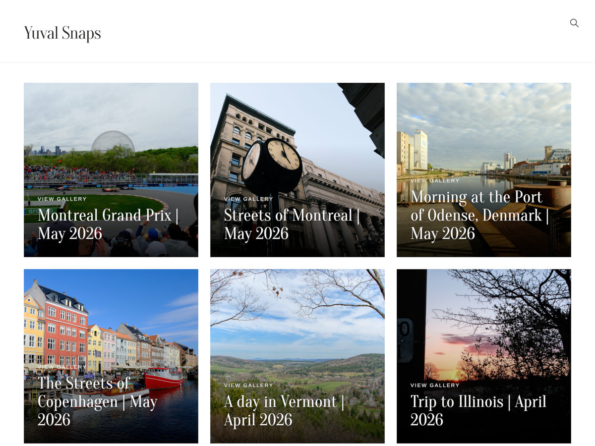

A collection worth exploring
Image-led covers with title overlays, responsive columns, and pagination. Choose a featured image, or let a gallery image become the cover.
Photography, made personal · WordPress
A quiet home for your best work. An open-source portfolio theme and gallery plugin that let the photographs tell the story.
Two independent components. One considered experience.

The portfolio
A cover grid for the collection. A dedicated post for each story. A closer look when you want it.
Image-led covers with title overlays, responsive columns, and pagination. Choose a featured image, or let a gallery image become the cover.
Oranienbaum typography, custom logo support, navigation, and search. A simple framework for making the portfolio your own.
The companion plugin adds a lightbox with loading feedback, fullscreen viewing, arrow-key navigation, and Escape to close.
Choose your setup
Use the theme with native WordPress galleries, or bring the gallery plugin to another theme.
The portfolio layout, typography, gallery covers, and everyday WordPress essentials.
Photo Gallery entries, an enhanced image viewer, and photographic metadata.
Requires WordPress 6.7.1+ and PHP 8.2+. Install each ZIP separately. These downloads are hosted on GitHub.
Make yourself at home
Back up your existing site's database and files before replacing a theme or installing the plugin.
Read the documentationUpload the theme ZIP in Appearance → Themes → Add New. Upload the plugin ZIP separately in Plugins → Add New, then activate the components you want.
Create a post with a WordPress Gallery block. Add a title and choose a featured image for its cover, or use the automatic gallery-image fallback.
Set your logo under Site Identity and assign your primary and footer menus. Publish your post and explore the result.
A few useful details
No. The theme works with standard posts and native WordPress galleries. The plugin also works independently with other themes.
EXIF extraction supports JPEG and TIFF files when the server can read their embedded metadata. Other image formats can still be displayed, but do not provide EXIF through this plugin. Missing or stripped metadata cannot be recovered.
Yes. Google location lookup is optional and configured in Settings → Media. When enabled, photo coordinates are sent to Google. Leave the API key empty to keep lookup disabled.
Open an issue on GitHub with your WordPress and PHP versions, the browser you used, and steps to reproduce the problem. Do not include API keys or other credentials.